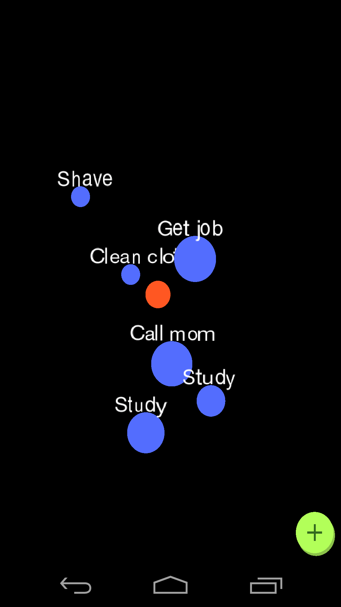
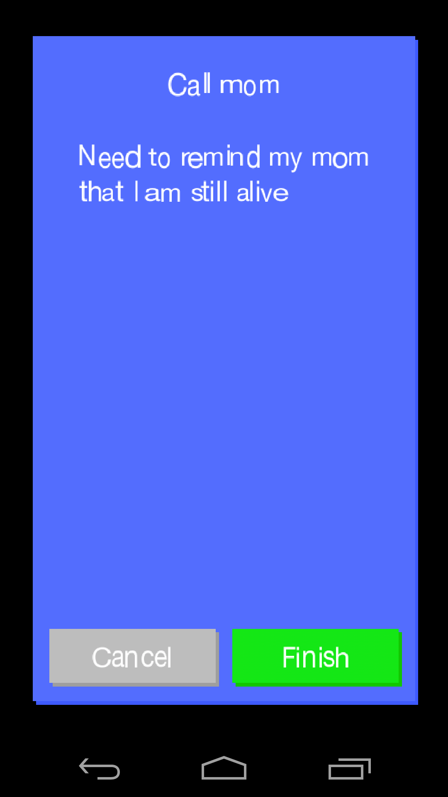

BubbleDone: A Neural Task Manager


BubbleDone is a task manager that models the flow of thoughts more efficiently than a simple list. Each task is a bubble that surrounds a central attractor, like planets orbiting a star. When you finish a task, you can throw it into the attractor, which sends it spiraling off into space, never to cloud your mind again.
Tasks can be moved closer to and further away from the central attractor, representing how important those tasks are to you. Whereas most task managers remind you constantly about tasks you have yet to finish, BubbleDone simply encourages you to finish the tasks in the center, rather than cluttering your notification screen with incessant reminders.
BubbleDone was created for HackTX by Rohan Ramchand (@rohan), Pato Lankenau (@pato), Tres Popp (@tpopp), and Will Yager (@wyager), all University of Texas at Austin Class of 2017.